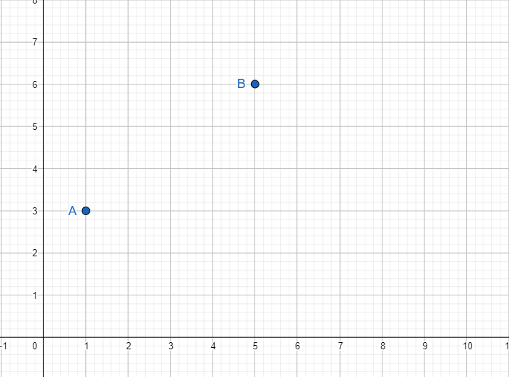
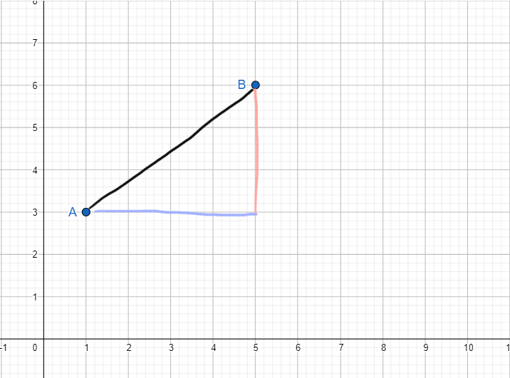
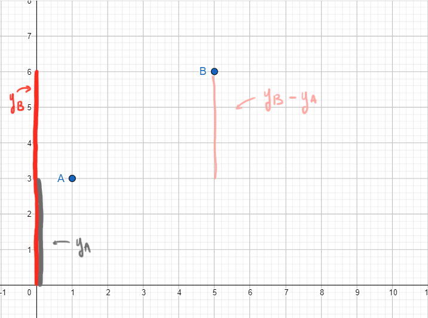
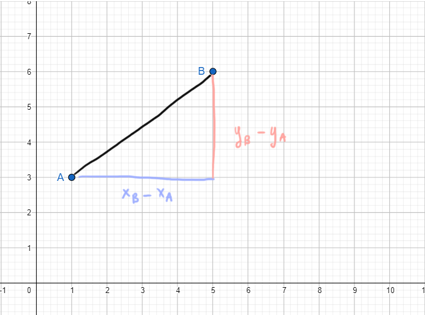

Prendiamo due punti \(A\left(1; 3\right)\) e \(B\left(5; 6\right)\). É possibile trovare la misura della loro distanza
a partire dalle loro coordinate?
Teorema di Pitagora
Dato un triangolo rettangolo vale la seguente uguaglianza:
\[
\text{ipotenusa}^2 = \left(\text{cateto}_{1}\right)^2 \,+\, \left(\text{cateto}_{2}\right)^2
\]
Il teorema di Pitagora stabilisce la relazione che intercorre tra i lati di un triangolo rettangolo.
Quindi possiamo usarlo per trovare un lato del triangolo se sappiamo gli altri due usando le due formule inverse:
Ritorniamo al nostro obiettivo:
abbiamo i punti \(A\left(1; 3\right)\) e \(B\left(5; 6\right)\) e vogliamo trovare
la misura della loro distanza.


Disegnamo questo triangolo rettangolo, in modo da poter sfruttare il teorema di Pitagora.
La misura del cateto blu è la differenza tra \(x_B\) ed \(x_A\)

La misura del cateto blu è la differenza tra \(y_B\) ed \(y_A\)

Abbiamo trovato la misura di entrambi i cateti rispetto alle coordinate di \(A\) e \(B\).
Usiamo il teorema di Pitagora per trovare l'ipotenusa del triangolo, che è la distanza tra \(A\) e \(B\)
\[
\text{ipotenusa} = \sqrt{\left(\text{cateto}_{1}\right)^2 \,+\, \left(\text{cateto}_{2}\right)^2}
\]
Quindi
\[
AB = \sqrt{\left(x_B-x_A\right)^2 \,+\, \left(y_B-y_A\right)^2}
\]
Riassumendo:
Dati \(A\left(x_A\,; y_A\right)\) e \(B\left(x_B\,; y_B\right)\), la distanza tra \(A\) e \(B\) è
\[
AB = \sqrt{\left(x_B-x_A\right)^2 \,+\, \left(y_B-y_A\right)^2}
\]
.png)
.png)